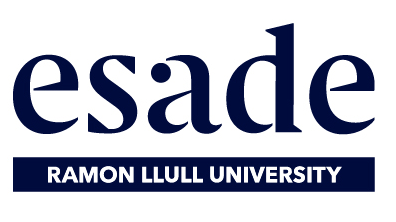

2026
Third edition
May 14–15, 2026 · Barcelona
Esade Business School · Pedralbes Campus

Fourth edition · 2027
A workshop bringing together researchers in macroeconomics for two days of presentations and discussion at Esade Business School.
University of Oxford
Federal Reserve Bank of Minneapolis
We welcome theoretical and empirical papers from all fields of macroeconomics. The workshop provides an informal and highly interactive environment for presenting and discussing research.
Please submit your paper in PDF format through the submission form.
Submit your paper ↗ · Download the call (PDF)The program will be available in March 2027.
The session schedule and a downloadable PDF will appear here.
Esade Business School
Pedralbes Campus · Barcelona
Room details and travel directions will be added closer to the workshop.
The workshop will be held in person on May 24 and 25, 2027.
Scientific committee
Calin ArcaleanPaolo MenganoIoana SchiopuCarolina Villegas Sanchez
Group Research in Economics and Finance (GREF)
Esade Business School
For enquiries: em2@esade.edu
Esade Macro Meetings
The workshop has brought researchers together at Esade in Barcelona since 2024. Browse the programs from past editions below.
May 14–15, 2026 · Barcelona
Esade Business School · Pedralbes Campus
May 15–16, 2025 · Barcelona
Keynote speaker: Vincent Sterk
May 16–17, 2024 · Barcelona
Keynote speaker: Nir Jaimovich